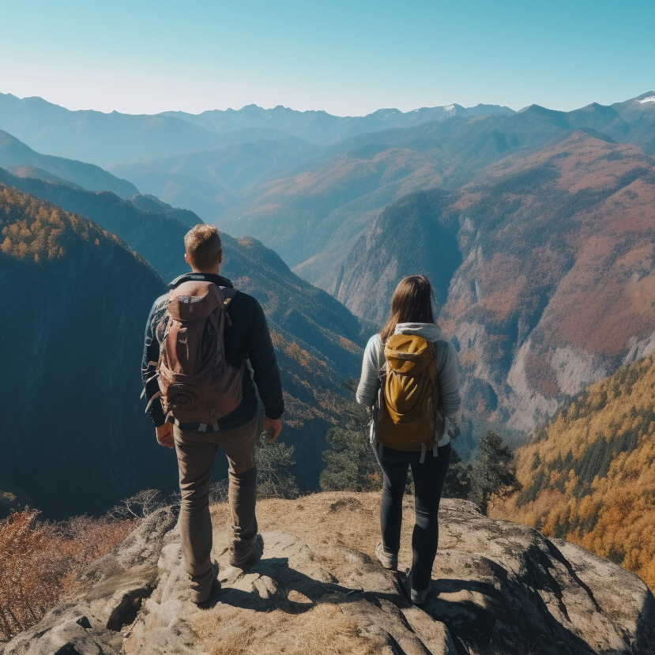
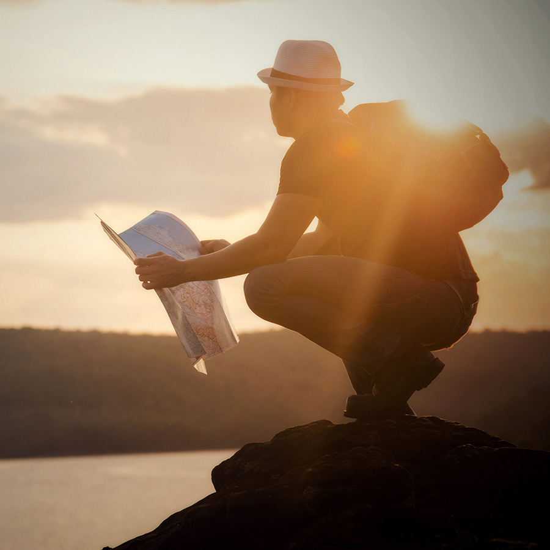
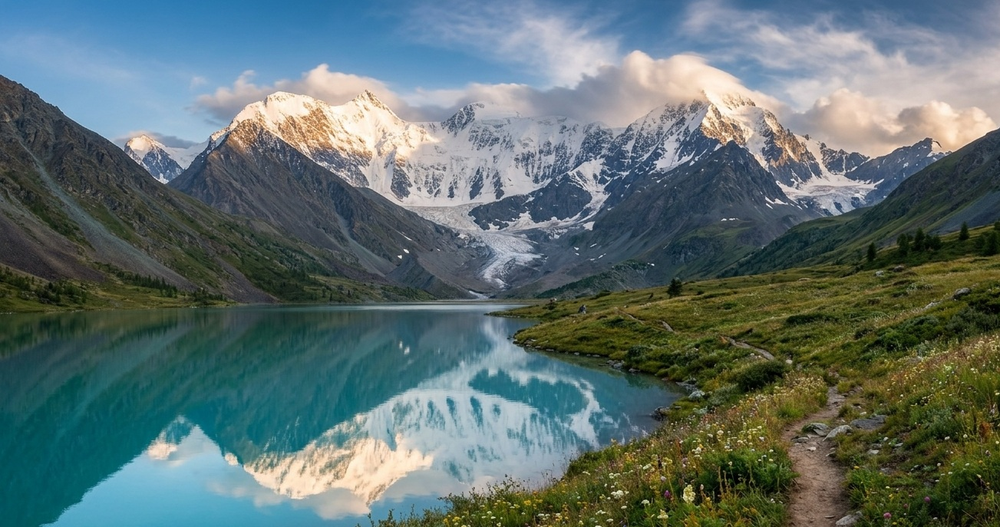
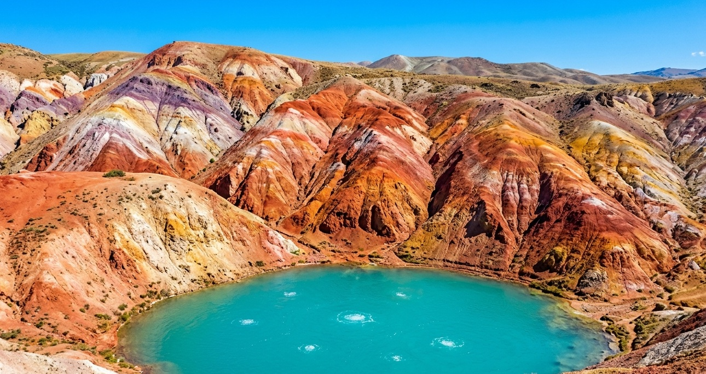
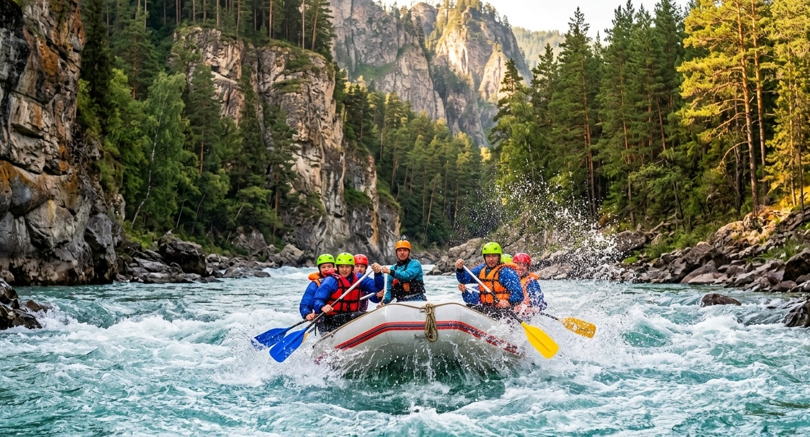
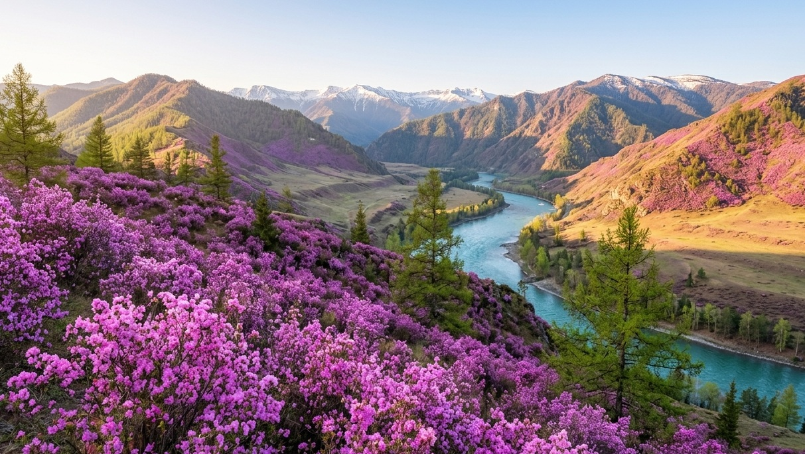
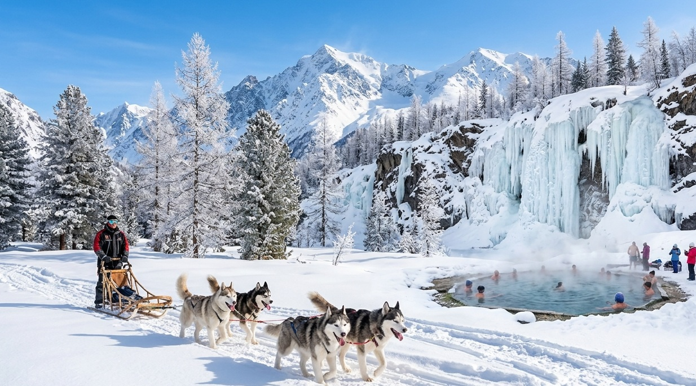
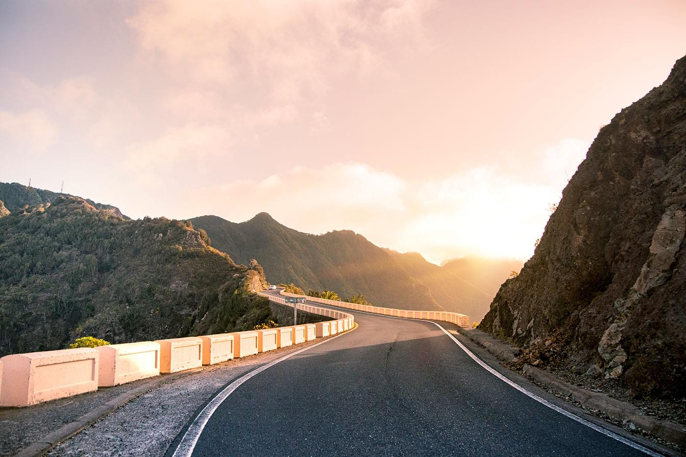

Экскурсии по Алтаю
Путешествие к сердцу Сибири: величественные горы, бирюзовые реки и захватывающие дух перевалы ждут вас.
Выбрать турАвторские туры
Уникальные маршруты по Чуйскому тракту и местам силы.
Исследуйте Алтай
Гейзеровое озеро, Марс, Кату-Ярык и другие чудеса природы.
Активный отдых
Сплавы по Катуни, конные прогулки и треккинг к ледникам.
Уютные базы
Комфортное проживание на турбазах и в эко-отелях среди гор.
Только лучшие маршруты

Походы с рюкзаком
Многодневные походы к подножию Белухи, Шавлинским озерам или плато Укок. Полное погружение в дикую природу, ночевки в палатках под звездным небом и песни у костра. Опытные инструкторы обеспечат безопасность на всем маршруте.
Узнать расписание походовПутешествия в мини-группах по Алтаю

Популярные туры по Алтаю
Выберите путешествие по душе

Золотое кольцо Алтая
Большое путешествие по главным достопримечательностям: Чуйский тракт, Телецкое озеро, Каракольские озера, перевал Кату-Ярык.

К подножию Белухи
Треккинг к высочайшей вершине Сибири. Акклиматизация, радиальные выходы к Аккемскому озеру и ледникам.

Марс и Гейзеровое озеро
Инопланетные пейзажи Алтая: цветные горы Кызыл-Чин, бирюзовое Гейзеровое озеро и захватывающие дух панорамы.

Сплав по Катуни
Активный отдых на воде: прохождение порогов, ночевки в палатках на берегу, рыбалка и баня под звездами.

Цветение маральника
Весенний фототур в период цветения алтайской сакуры. Розовые склоны гор и лучшие видовые площадки.

Зимняя сказка Алтая
Катание на снегоходах, собачьих упряжках, незамерзающие водопады и термальные источники.
Наслаждайтесь идеальным сочетанием приключений


